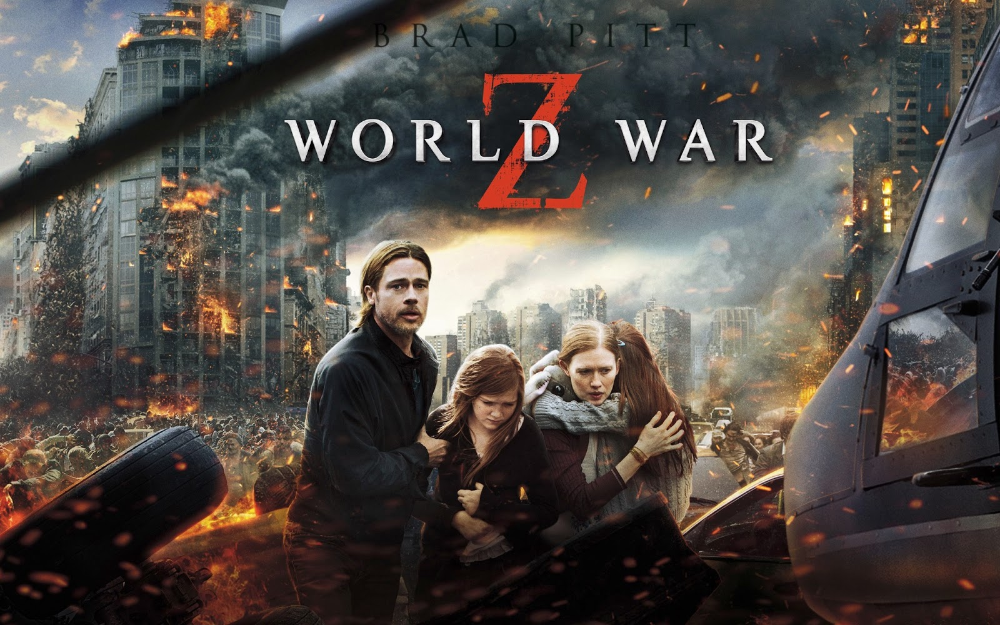

Top 3 movies I liked the most when I was a kid
The 3 movies I couldn't stop watching when I was a kid :)
2012 (2009)
Synopsis: In 2012, catastrophic events threaten to destroy the planet, confirming an ancient Mayan prophecy. As world governments try to save humanity and the globe falls into ruins, one man leaps into action and does everything to save his family.

This movie was one of my biggest hyperfixations as a kid. I enjoy sci-fi apocalipse movies and geoscience so I really liked this one and watched it more than 100 times.
World War Z (2013)
Synopsis: A lethal virus spreads rapidly and turns humans into zombies. Former UN agent Gerry Lane is called to investigate the epidemic that is ending humanity, starting a real race against time.

I love zombie movies and this was probably my favorite. There is a lot of cool and thrillin scenes and most zombie movies have a story of years of trying to find a cure but this one didn't.
War of the Worlds (2005)
Synopsis: Ray Ferrier is a divorced dockworker, estranged from his children, who live with their mother. When his ex-wife leaves the children for him to take care of for a few days, the planet is attacked by aliens that appear from the ground, driving tripods and destroying everything they find in their path. Ray tries to protect his children and flee to Boston to be with his ex-wife. Along the way, he faces various adversities and attacks.

This was another one that I watched a lot and I never get bored of it but everytime I hear a sound similar to the one that the aliens in the movies make I get chills... xD.